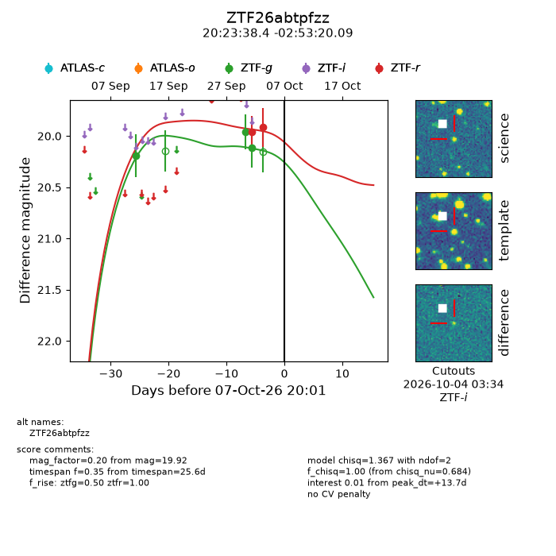
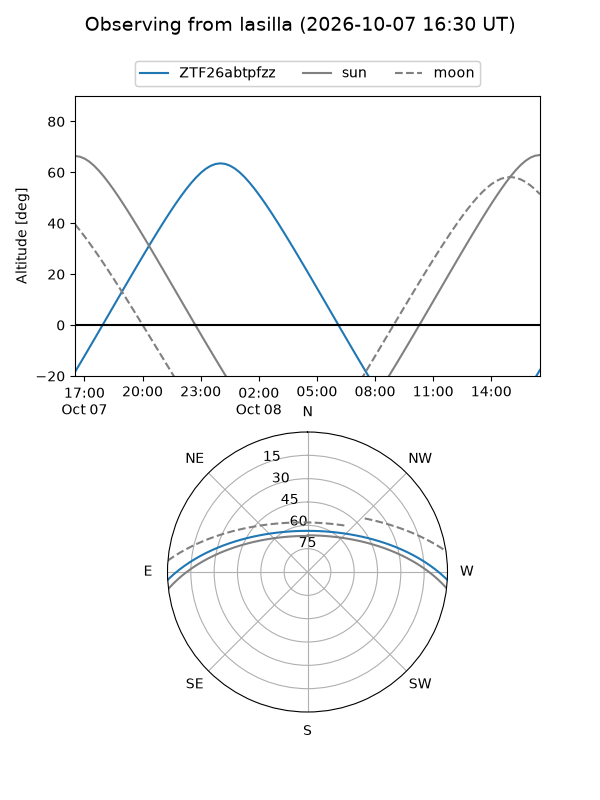
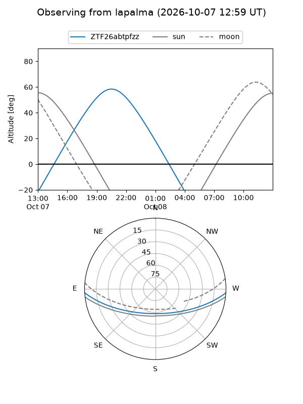
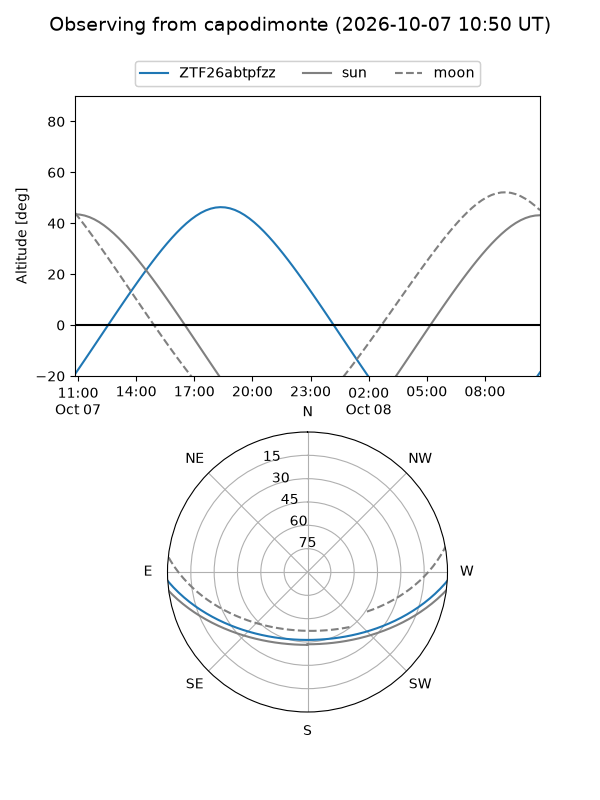
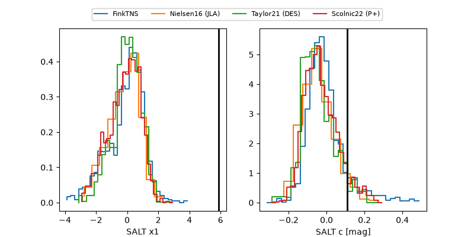

ZTF26abtpfzz
Target ZTF26abtpfzz at 2026-10-08 07:58
Aliases and brokers:
FINK-ZTF: ztf.fink-portal.org/ZTF26abtpfzz
Lasair-ZTF: lasair-ztf.lsst.ac.uk/objects/ZTF26abtpfzz
ALeRCE-ZTF: alerce.online/object/ZTF26abtpfzz
Direct TNS query: direct search
alt names
ZTF26abtpfzz (ztf,fink_ztf)
Coordinates:
equatorial (ra, dec) = 305.9099,-2.88891
equatorial (HMS+DMS) = 20:23:38.37,-02:53:20.09
galactic (l, b) = (41.1946,-21.77762)
Flags:
peak dt: +14.2
Photometry:
last ztfg=20.12, ztfr=19.92
3 ztfg, 2 ztfr detections
Lightcurve

Visibility



Additional plots
